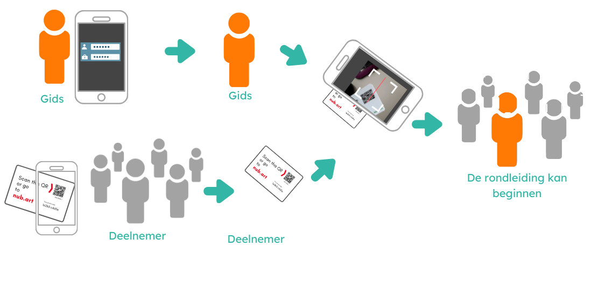
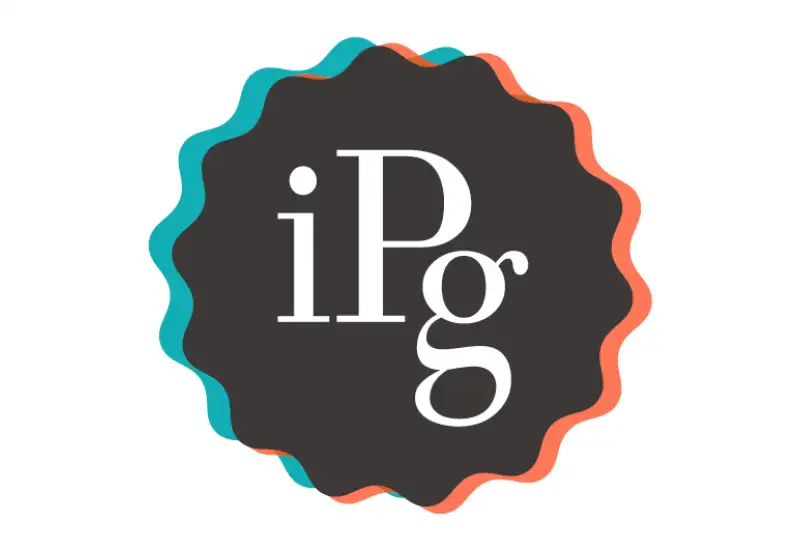

Groepsrondleiding via smartphone en internet
Geef je een groepsrondleiding op een luide locatie? Of waar je bijzonder stil moet praten?
Schrik je van de prijs van een conventioneel draadloos rondleidingssysteem?
Nubart® Live is wat je nodig hebt. Het is een webgebaseerde oplossing die naadloos werkt op de smartphones van deelnemers zonder dat je een app hoeft te downloaden. Nubart Live is zeer eenvoudig te gebruiken, zelfs voor deelnemers die niet technisch onderlegd zijn.
Een meeneemkaart zorgt voor de verbinding tussen de bezoeker en de gids. De smartphone van de gids fungeert als zender en de smartphone van de bezoeker als ontvanger. Zo eenvoudig is het!
Hoe Nubart Live werkt

Wilt u zien hoe Nubart LIVE werkt voor uw rondleidingen?
Vraag een gratis proefpakket aanEenvoudiger kan het niet
Waarom een rondleidingssysteem als iedereen een smartphone heeft?
Gemakkelijk te bedienen
Zowel bezoekers als de gids scannen de QR-code op de kaarten. Dat is alles! Geen registratie of app download nodig. (Alleen de gids moet inloggen).
Betaalbaar
Ons basispakket van 500 tickets kost minder dan het inhuren van een groepsreis-systeem en is voldoende voor veel tours.
Anoniem
Je bezoekers hoeven geen persoonlijke gegevens op te geven om Nubart Live te gebruiken. Het is volledig anoniem!
AI-vertalingn
Leidt u een meertalige groep? Geen probleem! Voeg eenvoudig onze live vertaalfunctie toe en iedereen kan meedoen, ongeacht hun moedertaal.
Learn more
Onderzoeksfunctie
Je gasten kunnen de gids op elk moment een vraag stellen zonder hem te onderbreken: De gids heeft op elk moment toegang tot de lijst met verzamelde vragen.
Hoe het werkt
Gemakkelijk te vervoeren
Een koffer met apparatuur voor een groepsrondleiding is zwaar om te dragen en aantrekkelijk voor dieven. Onze kaarten niet!
Hygiënisch
Apparatuur voor groepsrondleiding moet na elk gebruik worden ontsmet. Niet onze kaarten!
Milieuvriendelijk
Apparaten produceren schadelijk elektronisch afval. Onze kaarten worden gedrukt op FSC-karton met CO2-compensatie.
Bekijk de gebruikscases van Nubart Live
Gebruikscases

Fabrieks- en bedrijfsrondleidingen
Geef je bezoekers een kosteneffectieve rondleiding over je fabrieksvloer: Door gebruik van een 'unidirectionele' microfoon voor smartphones is Nubart Live ideaal voor fabrieksrondleidingen in lawaaiige omgevingen.

Rondleidingen door de stad
Nubart Live is een eenvoudig en betaalbaar systeem om groepen door
een stad te leiden:
De stem van de gids overstemt het verkeerslawaai en het
maakt niet uit hoe ver weg de deelnemers zijn.

Toegankelijkheid voor slechthorenden
Nubart Live helpt je om je rondleidingen inclusiever te maken: Het gebruik van een koptelefoon op een smartphone zorgt voor een veel betere luisterervaring voor mensen met gehoorproblemen (geen interferentie door achtergrondgeluiden, volume aanpassen, enz.)
Perfect voor fabrieks- en bedrijfsbezoeken
Efficiënte communicatie tijdens fabrieksrondleidingen – zelfs in een luidruchtige productieomgeving
Luidruchtige productieomgevingen maken het lastig om elkaar goed te verstaan tijdens fabrieksbezoeken. Traditionele draadloze gidsinstallaties zijn duur in aanschaf of huur, vergen veel onderhoud en zijn slechts in beperkte mate geschikt voor meertalige groepen.
Waarom industriële bedrijven voor Nubart LIVE kiezen:
- Geavanceerde ruisonderdrukking – Kristalhelder geluid, zelfs in luidruchtige productiehallen, dankzij een unidirectionele USB-microfoon
- Medewerkersopleiding en onboarding – Train internationale medewerkers in hun moedertaal, zonder extra hardware
- Discretie voor VIP-bezoekers – Anonieme deelname via smartphone, ideaal voor vertrouwelijke rondleidingen door de fabriek
- Flexibel gebruik zonder investeringskosten – Perfect voor incidentele bezoeken van investeerders of afspraken met klanten, zonder dagelijkse systeemhuur
Typische toepassingsgebieden in fabrieken en industriële bedrijven:
- Rondleidingen door de fabriek voor investeerders en belanghebbenden
- Introductie- en veiligheidstrainingen voor nieuwe medewerkers
- Bezoeken van klanten en partners aan de productieafdeling
- Productdemonstraties op beurzen of op de beursstand

Ben je van plan om fabrieksrondleidingen te organiseren?
Vraag een gratis testkit aan en probeer Nubart LIVE direct in je productieomgeving uit.
Gratis testkit aanvragenVoeg AI-aangedreven simultaanvertaling toe
Optionele AI-aangedreven simultaanvertaling

Begeleidt u rondleidingen met internationale bezoekers? Met onze optionele AI-add-on kan één gids nu een meertalige groep begeleiden zonder tolken in te huren.
Onze optionele AI-vertalingsadd-on werkt naadloos samen met Nubart LIVE:
- Deelnemers scannen hun QR-code en selecteren hun voorkeurstaal uit 35+ opties
- Ze kunnen luisteren in de oorspronkelijke taal om de natuurlijke stem van de gids te horen
- Of realtime AI-vertaling ontvangen als tekst en audio op hun scherm
- Vragen worden automatisch vertaald als deelnemers in hun eigen taal schrijven
Één rondleiding. Meerdere talen. Geen extra gidsen nodig.
Prijzen & Kostencalculator
Eenvoudige, transparante prijzen. Bereken je offerte in enkele seconden.
QR-codekaarten
Eenmalige aankoop · onbeperkte gidsen · geen abonnement

PDF · afdrukken & gebruiken
Geleverd binnen max. 1 dag
+ €1,50/code · min. 50

500 voorgedrukte kartonnen kaarten
Verzonden in 2-3 dagen

3.000+ kaarten · jouw huisstijl
Verzonden in 30 dagen
volumekortingen
AI-vertaling add-on
- Meer dan 35 talen, audio & tekst in realtime
- Prijs per gids-stream, niet per taal
- Onbeperkte luisteraars — geen kosten per bezoeker
- Alleen in rekening gebracht terwijl de gids spreekt met vertaling ingeschakeld
- Gids schakelt op elk moment in/uit
Mediabibliotheek
De gids stuurt multimedia-inhoud via afstandsbediening naar de schermen van deelnemers. Één bibliotheek per route.
Jouw kostenschatting
Bereken je Nubart LIVE offerte in een paar klikken
Stap 1 van 4
Welk kaartenspakket heb je nodig?
Stap 2 van 4
Heb je een mediabibliotheek nodig?
Met een mediabibliotheek kan de gids tijdens de rondleiding via afstandsbediening afbeeldingen, video's of documenten naar de schermen van deelnemers sturen. Je kunt voor elke route een aparte bibliotheek aanmaken.
Stap 3 van 4
Heb je de AI-vertaling add-on nodig?
Realtime vertaling in meer dan 35 talen. €39 per stream-uur (per gids met actieve vertaling).
Is dit de eerste keer dat je de AI-vertaling van Nubart LIVE gebruikt?
Jouw schatting
Kostenoverzicht
Je offerteaanvraag is klaar
Kopieer de tekst hieronder en plak hem in je e-mailclient, of gebruik de knop Openen in mail-app als je er een hebt geconfigureerd.
Vragen voor de gids? Geen probleem
Met de meeste standaard groepsbegeleidingssystemen
(apparaten) kunnen gasten geen vragen stellen.
Andere hebben een talkbackfunctie waarmee de gast een vraag kan stellen aan de
hele groep. Verlegen deelnemers hebben de neiging zich in te houden, terwijl de
andere deelnemers de gids soms onderbreken met eindeloze vragen, waardoor de hele
ervaring bedorven wordt.
Nubart Live biedt een niet-invasieve oplossing waarbij de vragen worden
verzameld op de smartphone van de gids, zodat hij ze op het juiste moment kan
beantwoorden.
Indien u de module voor gelijktijdige vertaling heeft aangeschaft,
worden de vragen automatisch vertaald.
Deelnemers

Gids

Vertrouwen ons





Veelgestelde vragen
FAQ
Eerste stappen
Tijdens de tour
Wanneer u een groep als gids opent, raden wij u aan om enkele extra kaarten te scannen voor het geval iemand te laat komt. In dat geval kunt u de te late deelnemer eenvoudig een van de reeds gescande kaarten overhandigen.
In dat geval geeft u de te late deelnemer gewoon een van de reeds gescande kaarten. Dat is alles – hij kan zich onmiddellijk bij de groep voegen.
Zodra u de groep sluit, kunt u deze extra kaarten opnieuw gebruiken voor de volgende tour. Kaarten verliezen hun overdraagbaarheid pas wanneer de deelnemers ze zelf scannen, niet wanneer de gids ze scant.
De latentie wordt beïnvloed door de prestaties van de smartphone, de verbindingskwaliteit en de mobiele provider.
Als de gids echter zachtjes spreekt, is de latentie nauwelijks waarneembaar – de deelnemers horen vooral de versterkte stem uit hun smartphone en niet de echo van de natuurlijke stem van de gids.
De groep blijft verbonden. Wanneer u het gesprek hebt beëindigd, keert u terug naar de browser. Als bij sommige deelnemers in plaats van groen een rood lampje brandt, tikt u op 'Opnieuw laden' – iedereen wordt opnieuw verbonden zonder dat ze hun QR-codes opnieuw hoeven te scannen.
Opmerking: als u op Android vergeet om het geluid te dempen voordat u de oproep aanneemt, kunnen de deelnemers mogelijk uw kant van het gesprek horen. Op de iPhone horen ze niets.
AI-vertaaladd-on
Raadpleeg onze handleiding voor meer informatie.
Google Translate kan weliswaar korte audiofragmenten afspelen, maar is niet ontworpen om een continue, handsfree audiostream te leveren. Elke bezoeker moet de app individueel beheren, de microfoon starten en stoppen, het afspelen activeren en de kleine tekst op zijn scherm lezen. Timing, onderbrekingen en vertragingen variëren van persoon tot persoon, wat in een groep snel tot verwarring kan leiden.
Nubart LIVE is speciaal ontwikkeld voor rondleidingen en fabrieksbezoeken. Een gids spreekt in een microfoon en alle deelnemers ontvangen synchroon dezelfde audiostream op hun eigen smartphone – zonder dat ze een app of een bepaalde talencombinatie hoeven te downloaden.
Met de optionele AI-vertaaladd-on wordt de vertaling rechtstreeks gekoppeld aan de live audiostream van de gids. De deelnemers selecteren eenvoudig hun voorkeurstaal en nemen samen deel aan de rondleiding, in plaats van dat elke persoon een aparte vertaalapp moet gebruiken.
Kortom: Google Translate is ideaal voor individueel gebruik; Nubart LIVE is ontwikkeld voor gezamenlijke, gesynchroniseerde rondleidingen.
Technische details
Dit heeft echter geen invloed op de groepsleden: voor hen is het batterijverbruik niet veel hoger dan bij het luisteren naar een podcast of een audioboek. Een uur continu gebruik verbruikt bijvoorbeeld 8% van de batterij van een vier jaar oude Android-smartphone.
Nubart LIVE werkt met elk standaard hotspot-apparaat en elke simkaart — u bent vrij om de hardware en het databundel te kiezen die het beste passen bij uw budget en bestemming. Deze aanpak is bijzonder handig wanneer uw groep internationale bezoekers bevat die mogelijk roamingkosten zouden maken, wanneer tours plaatsvinden in gebieden met wisselende mobiele dekking, of gewoon wanneer u een stabiele verbinding wilt garanderen ongeacht het abonnement of de provider van elke deelnemer.
Als u meerdaagse tours of grote groepen met actieve vertaling aanbiedt, adviseren wij u uw databundel daarop af te stemmen — of simpelweg een onbeperkte optie te kiezen, die doorgaans slechts een paar euro meer kost en elke zorg over het opraken van data tijdens de tour wegneemt.
Kaarten
U stuurt ons de afbeeldingen, logo's en andere elementen die u op uw kaart wilt hebben en onze ontwerper maakt verschillende ontwerpvoorstellen waaruit u kunt kiezen.
Bekijk onze prijzen voor Nubart LIVE
Indien u uw kaarten liever individueel wilt ontwerpen, is de minimale bestelhoeveelheid 3.000 stuks. Bekijk onze prijzen voor Nubart LIVE
Geen knelpunt bij de start van de tour: In plaats van 25 mensen die in de rij staan om een klein telefoonscherm te scannen, scant elke deelnemer zijn eigen kaart zelfstandig. De gids kan de kaarten zelfs vooraf inscannen voordat hij ze uitdeelt, zodat de groep van tevoren wordt gevormd.
Sessieherstel: Toeristen verlaten voortdurend hun browser om foto's te maken, berichten te checken of andere apps te gebruiken. Met een gedeelde digitale code verliezen ze hun verbinding en moeten ze de gids onderbreken. Met een Nubart LIVE-kaart scannen ze gewoon opnieuw en sluiten ze zich onmiddellijk aan — zonder hulp van de gids.
Toegangscontrole: In tegenstelling tot systemen waarbij iedereen die een PIN kent of een QR-code ziet kan deelnemen, geeft Nubart LIVE de gids volledige controle over wie er in de groep zit. Geen ongenodigde toehoorders, geen verwarring tussen overlappende tourgroepen op dezelfde locatie.
Heeft u een kaartvrije optie nodig voor spontane of eenmalige evenementen? Vraag ons naar onze afdrukbare QR-codebladen — dezelfde unieke codes, binnen enkele minuten klaar.
Prijzen
Klaar om uw groepsrondleidingen te transformeren?
Test Nubart LIVE risicovrij. Ontvang een proefpakket met 30 minuten gratis AI-vertaling.
Vraag een gratis proefpakket aanGeen creditcard nodig Volledige ondersteuning tijdens het testen